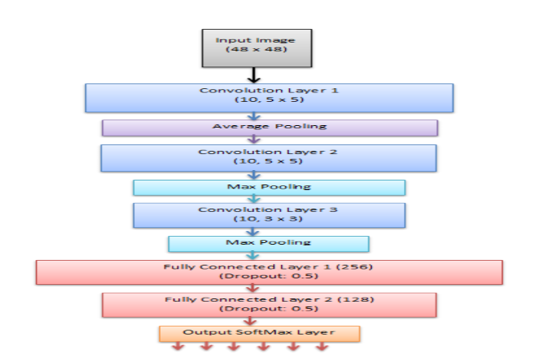

The Cognitive Toolkit (CNTK) Understands How You Feel

Posted: 2017-12-12
Some Background
CNTK
The original name for Microsoft's CNTK was the Computational Network Toolkit, now known today simply as the Cognitive Toolkit, still abbreviated CNTK for short. It was orignally written and offered up as a C++ package and now has Python bindings, making it much more widely adoptable.
In its original words: [CNTK is] a unified deep-learning toolkit that describes neural networks as a series of computational steps via a directed graph
It was first open-sourced in April of 2015 with intended use for researchers and protoypers using GPUs for accelerated matrix calculations, much of what deep learning is built upon these days. Interestingly, TensorFlow has its initial public release in November of 2015. Of note, 2015 was also a good year for Microsoft Research in the computer vision space as they won the ImageNet challenge that December using this toolkit and a 152-layer deep neural network.
Since the beginning CNTK has been available for Linux and Windows. We will be using a Linux Docker image in a minute.
FER Faces Data
This data comes via a Kaggle competition on facial expressions found here.
The data consists of 48x48 pixel grayscale images of faces. The faces have been automatically registered so that the face is more or less centered and occupies about the same amount of space in each image. The task is to categorize each face based on the emotion shown in the facial expression in to one of two categories, Happy or Sad. That being said this dataset has images (all but two of interest were dropped in this analysis) for a total of 6 emotions: Angry, Disgust, Fear, Happy, Sad, Surprise, and Neutral.
How I set things up
Since I'm on a Mac, I chose to use the Docker image of CNTK (instructions found here). This pulls down an image of a pre-created system and I run it in my own Docker container basically recreating an Ubuntu setup with CNTK locally. It's pretty neat! And then I can run Jupyter notebooks on my system and pull in local files and write out data as needed. Let me show you how and then after we'll talk about the CNNs.
By following this Doc I got a Jupyter notebook up and running with CNTK with all of the Tutorial notebooks at the ready and the ability to upload or create new ones as needed.
I ran these commands to get a Jupyter notebook set up with CNTK (v2.1 used here).
An important note: in the run command for Docker I mounted a volume with "$PWD/data:/data". This "/data" folder can be accessed from the Jupyter notebook, as you can see if you check them out (link below), but also used to add data or pull data from the docker container just like any file folder on your system. A very handy trick!
docker pull microsoft/cntk:2.1-cpu-python3.5
docker run -d --volume "$PWD/data:/data" -p 8888:8888 --name cntk-jupyter-notebooks -t microsoft/cntk:2.1-cpu-python3.5
docker exec -it cntk-jupyter-notebooks bash -c "source /cntk/activate-cntk && jupyter-notebook --no-browser --port=8888 --ip=0.0.0.0 --notebook-dir=/cntk/Tutorials --allow-root"
What I Did In a Nutshell
So, I tried many different CNN network architectures (simple three-layer CNN, ones with pooling and dropout layers, etc.) and several hyperparameter combinations (minibatch sizes for training, learning rate, etc.). Here are just a few basic improvement tips for image classification based on what I found and a bit on how to do this with CNTK, plus my results - my hope is that you can do this on your own with some tips to start or maybe add to your workflow.
The Jupyter notebooks associated with this post can be found on GitHub here
Positive Results
Improvement #1: Use sufficient data
I began this journey with about 1000 images that I sorted and curated into a "sad" or "happy" bucket - using the PICS 2D face sets. I even got up to 72% accuracy with this dataset and a CNN with pooling. Then I discovered a Kaggle competition from about 5 years ago dealing with recognizing facial expressions - Challenges in Representation Learning: Facial Expression Recognition Challenge and this provided me with about 13500 training images and 2300 test images of the "happy" or "sad" kind (there were also images for categories: angry, disgust, fear, surprise and neutral in case you wish to try these out).
Improvement #2: Intensity normalization
I read about the sensitivity of CNNs to certain normalizations. So, I decided to try a recommended pixel intensity normalization (Ref to nice StackOverflow hint). This update resulted in about a 5% increase in accuracy on the held-out test set.
My code looked like:
def normalize(arr):
"""
Linear normalization
http://en.wikipedia.org/wiki/Normalization_%28image_processing%29
"""
arr = arr.astype('float')
minval = arr.min()
maxval = arr.max()
if minval != maxval:
arr -= minval
arr *= (255.0/(maxval-minval))
return arr
Improvement #3: Adjust or even search hyperparameter space
Play with the hyperparameters. I had a code cell full of my hyperparameters, e.g. learning rate and minibatch sizes. I varied one or two at a time. Just as an example, I took the learning rate down 10x (from 0.2 to 0.02) and my resulting accuracy increased approximately 5%. Using the CNTK train package one can design a "trainer" object encapsulating all training tasks and include parameter ranges inside it. I also played with the strides and filter sizes or receptive fields in my CNN for the convolutional and pooling layers (see the Stanford CV course notes for great explanations of pretty much anything CNN and much more). My big tip if you are starting out is simply to tune these adjustable parameters yourself and see what happens.
Improvement #4: Add more layers (but be careful of overfitting)
Interestingly, layering in three pooling layers in between the convolutional layers (last one before the dense output layer) resulted in about another 5% jump in accuracy on the test set. (more on CNNs in the Stanford course notes)
Here's what the relatively simple model looked like in the CNTK Python API:
def create_model(features):
with C.layers.default_options(init=C.glorot_uniform(), activation=C.relu):
model = C.layers.Sequential([
C.layers.For(range(3), lambda i: [
C.layers.Convolution2D(filter_shape=(5,5),
num_filters=[8, 16, 16][i],
pad=True,
strides=[(1,1), (1,1), (2,2)][i]),
C.layers.AveragePooling(filter_shape=(2,2),
strides=1,
pad=True)
]),
C.layers.Dense(num_output_classes, activation=None)
])
return model(features)
If you have seen some networks in CNTK, note I'm using the Sequential notation "shortcut" for repeating some layers, but maybe with different params (more in this Doc).
The above "simple" CNN resulted in an average test error of 28.53%.
I decided I'd like to try a more complex network and so began reading some papers on emotion recognition. I came across one that appeared to be using the same size images (likely the same dataset). Their proposed CNN architecture looked like this (Ref):

I implemented the paper's architecture in the CNTK Python API as follows (it had 5935330 parameters in 12 parameter tensors):
def create_model(features):
with C.layers.default_options(init=C.glorot_uniform(), activation=C.relu):
model = C.layers.Sequential([
C.layers.For(range(3), lambda i: [
C.layers.Convolution2D(filter_shape=
[(5,5), (5,5), (3,3)][i],
num_filters=10,
pad=True,
strides=(1,1)),
[C.layers.AveragePooling(filter_shape=(2,2),
strides=1,
pad=True),
C.layers.MaxPooling(filter_shape=(2,2),
strides=1,
pad=True),
C.layers.MaxPooling(filter_shape=(2,2),
strides=1,
pad=True)][i]]),
C.layers.Dense(256),
C.layers.Dropout(0.5),
C.layers.Dense(128),
C.layers.Dropout(0.5),
C.layers.Dense(num_output_classes, activation=None)
])
return model(features)
The above CNN architecture which matched the paper, resulted in a 25.61% average test error. Let's see if we can do even better.
A slightly modified, even more complex version of this architecture looks like this in the CNTK Python API (my update was to increase the number of filters for each conv layer):
def create_model(features):
with C.layers.default_options(init=C.glorot_uniform(), activation=C.relu):
model = C.layers.Sequential([
C.layers.For(range(3), lambda i: [
C.layers.Convolution2D(filter_shape=(5,5),
num_filters=[48, 48, 64][i],
pad=True,
strides=(1,1),
C.layers.MaxPooling(filter_shape=(2,2),
strides=1,
pad=True)
]),
C.layers.Dense(256),
C.layers.Dropout(0.5),
C.layers.Dense(128),
C.layers.Dropout(0.5),
C.layers.Dense(num_output_classes, activation=None)
])
return model(features)
In the last architecture I had 37917906 parameters in 12 parameter tensors with an average test error of 22.35% (which, to be honest, could cause an issue of over-fitting due to the very large number of parameters - just something to consider). A validation step would be highly recommended in this case given sufficient computational power!
Conclusion
I picked a few random pictures from an online image search of happy and sad faces. With my error rate of 22% it did pretty well, even on pictures of my own face (not shown). These, for instance, were correctly identified as happy and sad.

(Note, the images may not show correctly as their 48x48 square size in this browser).
The improvements are not an exhaustive list of everything one can try to gain better results of course, but do represent some common ways to deal with image data using CNNs. If you have GPU-acceleration options, give some more complex network architectures a try - you could spin up an Azure Deep Learning VM which is what I usually do at my day job. Happy deep learning!
The Jupyter notebooks associated with this post can be found on GitHub here